<!DOCTYPE html>
<html>
<head><meta name="generator" content="Hexo 3.8.0">
  <meta charset="utf-8">
  
  <title>flex布局 | LIUXUEWEN&#39;S BLOG</title>
  <meta name="viewport" content="width=device-width, initial-scale=1, maximum-scale=1">
  
    <meta name="keywords" content="LIUXUEWEN,LIUXUEWEN's Blog">
  
  <meta name="description" content="一、前言  布局的传统解决方案基于盒状模型，依赖 display + position + float，它对于特殊布局非常不方便，比如垂直居中等。   2009年，W3C提出了一种新的方案–Flex布局，可以简便、完整、响应式地实现各种页面布局。目前它已经得到了所有浏览器的支持。 二、Flex 布局  Flex 是 Flexible Box 的缩写，意为”弹性布局”，用来为盒状模型提供最大的灵活性">
<meta name="keywords" content="前端-CSS">
<meta property="og:type" content="article">
<meta property="og:title" content="flex布局">
<meta property="og:url" content="http://liuxuewen-site.github.io/2018/03/12/CSS-ryf-flex/index.html">
<meta property="og:site_name" content="LIUXUEWEN&#39;S BLOG">
<meta property="og:description" content="一、前言  布局的传统解决方案基于盒状模型，依赖 display + position + float，它对于特殊布局非常不方便，比如垂直居中等。   2009年，W3C提出了一种新的方案–Flex布局，可以简便、完整、响应式地实现各种页面布局。目前它已经得到了所有浏览器的支持。 二、Flex 布局  Flex 是 Flexible Box 的缩写，意为”弹性布局”，用来为盒状模型提供最大的灵活性">
<meta property="og:locale" content="default">
<meta property="og:image" content="http://liuxuewen-site.github.io/2018/03/12/CSS-ryf-flex/1.png">
<meta property="og:image" content="http://liuxuewen-site.github.io/2018/03/12/CSS-ryf-flex/2.png">
<meta property="og:image" content="http://liuxuewen-site.github.io/2018/03/12/CSS-ryf-flex/3.png">
<meta property="og:image" content="http://liuxuewen-site.github.io/2018/03/12/CSS-ryf-flex/4.png">
<meta property="og:image" content="http://liuxuewen-site.github.io/2018/03/12/CSS-ryf-flex/5.png">
<meta property="og:image" content="http://liuxuewen-site.github.io/2018/03/12/CSS-ryf-flex/6.png">
<meta property="og:image" content="http://liuxuewen-site.github.io/2018/03/12/CSS-ryf-flex/7.png">
<meta property="og:image" content="http://liuxuewen-site.github.io/2018/03/12/CSS-ryf-flex/8.png">
<meta property="og:image" content="http://liuxuewen-site.github.io/2018/03/12/CSS-ryf-flex/9.png">
<meta property="og:image" content="http://liuxuewen-site.github.io/2018/03/12/CSS-ryf-flex/10.png">
<meta property="og:image" content="http://liuxuewen-site.github.io/2018/03/12/CSS-ryf-flex/11.png">
<meta property="og:image" content="http://liuxuewen-site.github.io/2018/03/12/CSS-ryf-flex/13.png">
<meta property="og:image" content="http://liuxuewen-site.github.io/2018/03/12/CSS-ryf-flex/14.png">
<meta property="og:image" content="http://liuxuewen-site.github.io/2018/03/12/CSS-ryf-flex/15.png">
<meta property="og:image" content="http://liuxuewen-site.github.io/2018/03/12/CSS-ryf-flex/16.png">
<meta property="og:image" content="http://liuxuewen-site.github.io/2018/03/12/CSS-ryf-flex/17.png">
<meta property="og:image" content="http://liuxuewen-site.github.io/2018/03/12/CSS-ryf-flex/18.png">
<meta property="og:image" content="http://liuxuewen-site.github.io/2018/03/12/CSS-ryf-flex/19.png">
<meta property="og:image" content="http://liuxuewen-site.github.io/2018/03/12/CSS-ryf-flex/20.png">
<meta property="og:image" content="http://liuxuewen-site.github.io/2018/03/12/CSS-ryf-flex/21.png">
<meta property="og:image" content="http://liuxuewen-site.github.io/2018/03/12/CSS-ryf-flex/22.png">
<meta property="og:image" content="http://liuxuewen-site.github.io/2018/03/12/CSS-ryf-flex/23.png">
<meta property="og:image" content="http://liuxuewen-site.github.io/2018/03/12/CSS-ryf-flex/24.png">
<meta property="og:image" content="http://liuxuewen-site.github.io/2018/03/12/CSS-ryf-flex/25.png">
<meta property="og:image" content="http://liuxuewen-site.github.io/2018/03/12/CSS-ryf-flex/26.png">
<meta property="og:updated_time" content="2019-01-25T09:59:22.149Z">
<meta name="twitter:card" content="summary">
<meta name="twitter:title" content="flex布局">
<meta name="twitter:description" content="一、前言  布局的传统解决方案基于盒状模型，依赖 display + position + float，它对于特殊布局非常不方便，比如垂直居中等。   2009年，W3C提出了一种新的方案–Flex布局，可以简便、完整、响应式地实现各种页面布局。目前它已经得到了所有浏览器的支持。 二、Flex 布局  Flex 是 Flexible Box 的缩写，意为”弹性布局”，用来为盒状模型提供最大的灵活性">
<meta name="twitter:image" content="http://liuxuewen-site.github.io/2018/03/12/CSS-ryf-flex/1.png">
  
  
    <link rel="icon" href="/favicon.ico">
  
  <link href="//cdn.bootcss.com/font-awesome/4.7.0/css/font-awesome.min.css" rel="stylesheet" type="text/css">
  <link rel="stylesheet" href="/css/style.css">
  <script src="/js/pace.min.js"></script>
  

  
  

</head>
</html>
<body>
  <div id="container">
      <header id="header">
    <div id="banner"></div>
    <div id="header-outer">
        <div id="header-menu" class="header-menu-pos animated">
            <div class="header-menu-container">
                <a href="/" class="left">
                    <span class="site-title">I AM LIUXUEWEN</span>
                </a>
                <nav id="header-menu-nav" class="right">
                    
                    <a href="/">
                        <i class="fa fa-home"></i>
                        <span>Home</span>
                    </a>
                    
                    <a href="/archives">
                        <i class="fa fa-archive"></i>
                        <span>Archives</span>
                    </a>
                    
                    <a href="/about">
                        <i class="fa fa-user"></i>
                        <span>About</span>
                    </a>
                    
                </nav>
                <a class="mobile-header-menu-button">
                    <i class="fa fa-bars"></i>
                </a>
            </div>
        </div>
        <div id="header-row">
            <div id="logo">
                <a href="/">
                    
                </a>
            </div>
            <div class="header-info">
                <div id="header-title">
                    
                    <h2>
                        I AM LIUXUEWEN
                    </h2>
                    
                </div>
                <div id="header-description">
                    
                    <h3>
                        一个 宅不住 的 IT程序员
                    </h3>
                    
                </div>
            </div>
            <nav class="header-nav">
                <div class="social">
                    
                        <a title="Github" target="_blank" href="//github.com/liuxuewen-site">
                            <i class="fa fa-github fa-2x"></i></a>
                    
                        <a title="Weibo" "="">
                            <i class="fa fa-weibo fa-2x"></i></a>
                    
                        <a title="Weixin" "="">
                            <i class="fa fa-weixin fa-2x"></i></a>
                    
                </div>
            </nav>
        </div>
    </div>
</header>
      <div class="outer">
        <section id="main" class="body-wrap"><article id="post-CSS-ryf-flex" class="article article-type-post" itemscope="" itemprop="blogPost">
  <div class="article-inner">
    
      <header class="article-header">
        
  
    <h1 class="post-title" itemprop="name">
      flex布局
    </h1>
    <div class="post-title-bar">
      <ul>
          
              <li>
                  <i class="fa fa-book"></i>
                  
                      <a href="/categories/前端/">前端</a>
                  
              </li>
          
        <li>
          <i class="fa fa-calendar"></i>  2018-03-12
        </li>
        <li>
          <i class="fa fa-eye"></i>
          <span id="busuanzi_value_page_pv"></span>
        </li>
      </ul>
    </div>
  

          
      </header>
    
    <div class="article-entry post-content" itemprop="articleBody">
      
            
            <h3 id="一、前言"><a href="#一、前言" class="headerlink" title="一、前言"></a>一、前言</h3><p>  布局的传统解决方案基于盒状模型，依赖 display + position + float，它对于特殊布局非常不方便，比如垂直居中等。</p>
<p>  2009年，W3C提出了一种新的方案–Flex布局，可以简便、完整、响应式地实现各种页面布局。目前它已经得到了所有浏览器的支持。</p>
<h3 id="二、Flex-布局"><a href="#二、Flex-布局" class="headerlink" title="二、Flex 布局"></a>二、Flex 布局</h3><p>  Flex 是 Flexible Box 的缩写，意为”弹性布局”，用来为盒状模型提供最大的灵活性。</p>
<p>  采用 Flex 布局的元素，称为 Flex 容器（flex container），简称”容器”。它的所有子元素自动成为容器成员，称为 Flex 项目（flex item），简称”项目”。</p>
<p>  任何一个容器都可以指定为 Flex 布局,如：<br>  <figure class="highlight bash"><table><tr><td class="gutter"><pre><span class="line">1</span><br><span class="line">2</span><br><span class="line">3</span><br><span class="line">4</span><br><span class="line">5</span><br><span class="line">6</span><br><span class="line">7</span><br><span class="line">8</span><br><span class="line">9</span><br><span class="line">10</span><br><span class="line">11</span><br><span class="line">12</span><br><span class="line">13</span><br><span class="line">14</span><br><span class="line">15</span><br><span class="line">16</span><br><span class="line">17</span><br></pre></td><td class="code"><pre><span class="line">//块级元素</span><br><span class="line">.box&#123;</span><br><span class="line">    display: flex;</span><br><span class="line">&#125;</span><br><span class="line"></span><br><span class="line">//行内元素</span><br><span class="line">.box&#123;</span><br><span class="line">    display: inline-flex;</span><br><span class="line">&#125;</span><br><span class="line"></span><br><span class="line">//Webkit 内核的浏览器，必须加上-webkit前缀</span><br><span class="line">.box&#123;</span><br><span class="line">    display: -webkit-flex; /* Safari */</span><br><span class="line">    display: flex;</span><br><span class="line">&#125;</span><br><span class="line"></span><br><span class="line">注意，设为 Flex 布局以后，子元素的<span class="built_in">float</span>、clear和vertical-align属性将失效。</span><br></pre></td></tr></table></figure></p>
<h3 id="三、基本原理"><a href="#三、基本原理" class="headerlink" title="三、基本原理"></a>三、基本原理</h3><p>  容器默认存在两根轴：水平的主轴（main axis）和垂直的交叉轴（cross axis）。<br>  主轴的开始位置（与边框的交叉点）叫做main start，结束位置叫做main end；<br>  交叉轴的开始位置叫做cross start，结束位置叫做cross end。<br>  项目默认沿主轴排列。单个项目占据的主轴空间叫做main size，占据的交叉轴空间叫做cross size。</p>
<p>  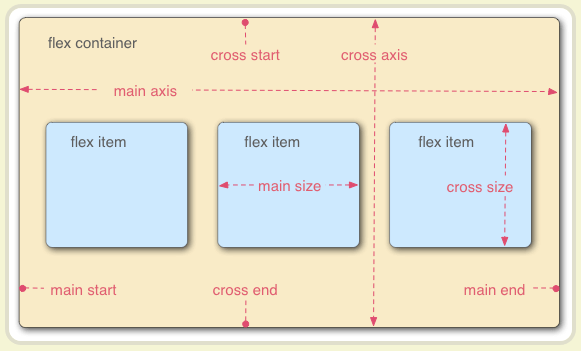</p>
<p>  容器中所有的孩子的布局都会受到这两个轴的影响，相关的css属性就是通过改变主轴和纵轴的方向来实现不同的布局效果的。</p>
<h3 id="四、容器的属性"><a href="#四、容器的属性" class="headerlink" title="四、容器的属性"></a>四、容器的属性</h3><p>  以下6个属性设置在容器上：flex-direction、flex-wrap、flex-flow、justify-content、align-items、align-content</p>
<p>  <font size="4" face="黑体"><strong>1、flex-direction属性：</strong></font><br>  flex-direction属性决定主轴的方向（即项目的排列方向）。<br>  它可取4个值：<br>  1）row（默认值）：主轴为水平方向，起点在左端。<br>  2）row-reverse：主轴为水平方向，起点在右端。<br>  3）column：主轴为垂直方向，起点在上沿。<br>  4）column-reverse：主轴为垂直方向，起点在下沿。</p>
<p>  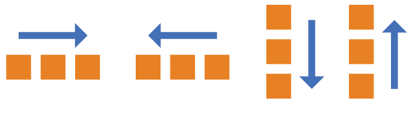</p>
<p>  <font size="4" face="黑体"><strong>2、flex-wrap属性：</strong></font><br>  默认情况下，项目都排在一条线（又称”轴线”）上。flex-wrap属性定义，如果一条轴线排不下，如何换行。<br>  它可能取三个值:<br>  1）nowrap（默认）：不换行。<br>  2）wrap：换行，第一行在上方。<br>  3）wrap-reverse：换行，第一行在下方。</p>
<p>  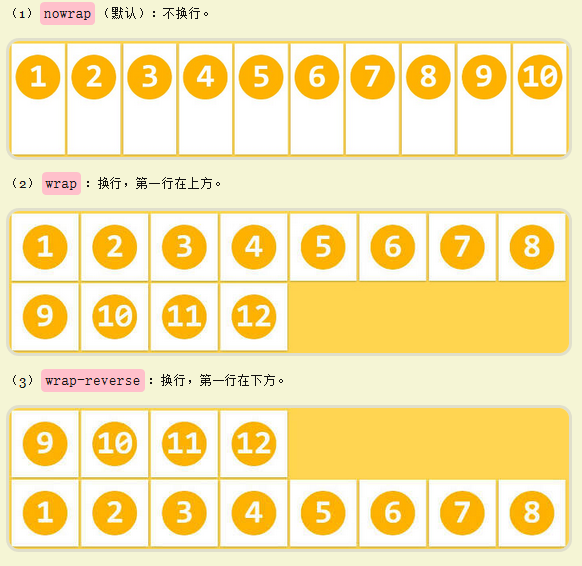</p>
<p>  <font size="4" face="黑体"><strong>3、flex-flow属性：</strong></font><br>  flex-flow属性是flex-direction属性和flex-wrap属性的简写形式，默认值为row nowrap。</p>
<p>  <font size="4" face="黑体"><strong>4、justify-content属性：</strong></font><br>  justify-content属性定义了项目在主轴上的对齐方式。<br>  它可取5个值，具体对齐方式与轴的方向有关。下面假设主轴为从左到右。<br>  1）flex-start（默认值）：左对齐<br>  2）flex-end：右对齐<br>  3）center： 居中<br>  4）space-between：两端对齐，项目之间的间隔都相等。<br>  5）space-around：每个项目两侧的间隔相等。所以，项目之间的间隔比项目与边框的间隔大一倍。</p>
<p>  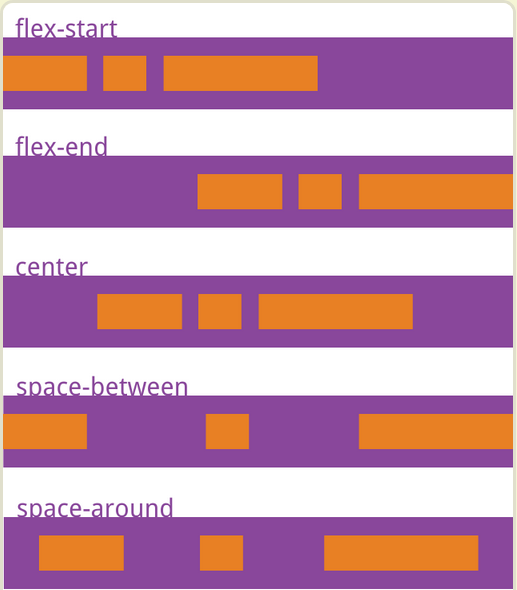</p>
<p>  <font size="4" face="黑体"><strong>5、align-items属性：</strong></font><br>  align-items属性定义项目在交叉轴上如何对齐。<br>  它可取5个值。具体的对齐方式与交叉轴的方向有关，下面假设交叉轴从上到下。<br>  1）flex-start：交叉轴的起点对齐。<br>  2）flex-end：交叉轴的终点对齐。<br>  3）center：交叉轴的中点对齐。<br>  4）baseline: 项目的第一行文字的基线对齐。<br>  5）stretch（默认值）：如果项目未设置高度或设为auto，将占满整个容器的高度。</p>
<p>  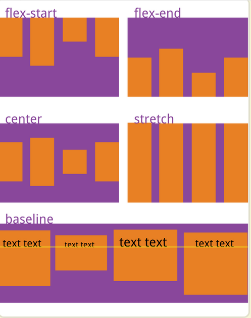</p>
<p>  <font size="4" face="黑体"><strong>6、align-content属性：</strong></font><br>  align-content属性定义了多根轴线的对齐方式。如果项目只有一根轴线，该属性不起作用。<br>  它可取6个值。<br>  1）flex-start：与交叉轴的起点对齐。<br>  2）flex-end：与交叉轴的终点对齐。<br>  3）center：与交叉轴的中点对齐。<br>  4）space-between：与交叉轴两端对齐，轴线之间的间隔平均分布。<br>  5）space-around：每根轴线两侧的间隔都相等。所以，轴线之间的间隔比轴线与边框的间隔大一倍。<br>  6）stretch（默认值）：轴线占满整个交叉轴。</p>
<p>  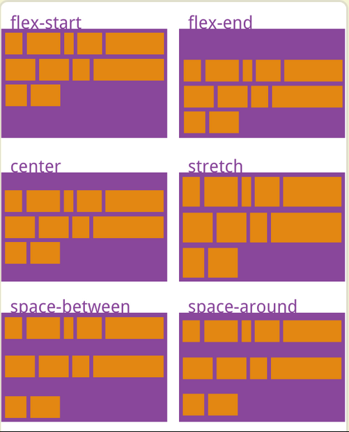</p>
<h3 id="五、项目的属性"><a href="#五、项目的属性" class="headerlink" title="五、项目的属性"></a>五、项目的属性</h3><p>  以下6个属性设置在项目上：order、flex-grow、flex-shrink、flex-basis、flex、align-self</p>
<p>  <font size="4" face="黑体"><strong>1、order属性：</strong></font><br>  order属性定义项目的排列顺序。数值越小，排列越靠前，默认为0。</p>
<p>  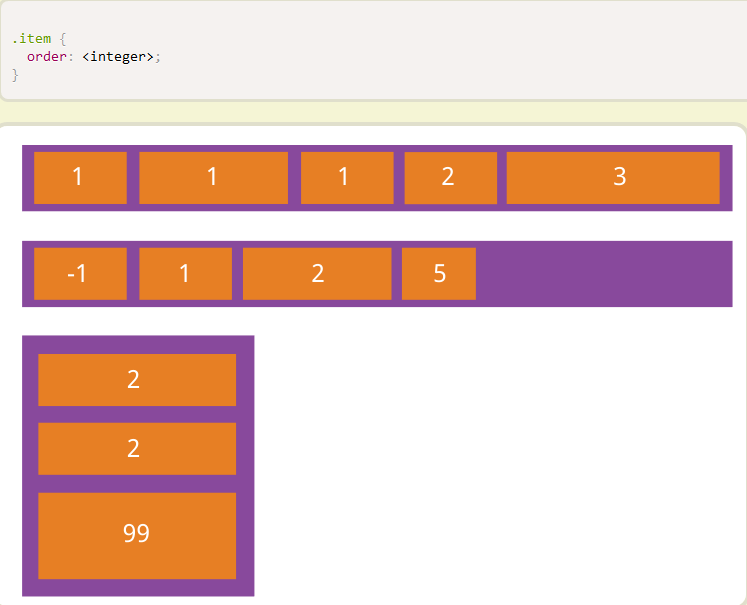</p>
<p>  <font size="4" face="黑体"><strong>2、flex-grow属性：</strong></font><br>  flex-grow属性定义项目的放大比例，默认为0，即如果存在剩余空间，也不放大。</p>
<p>  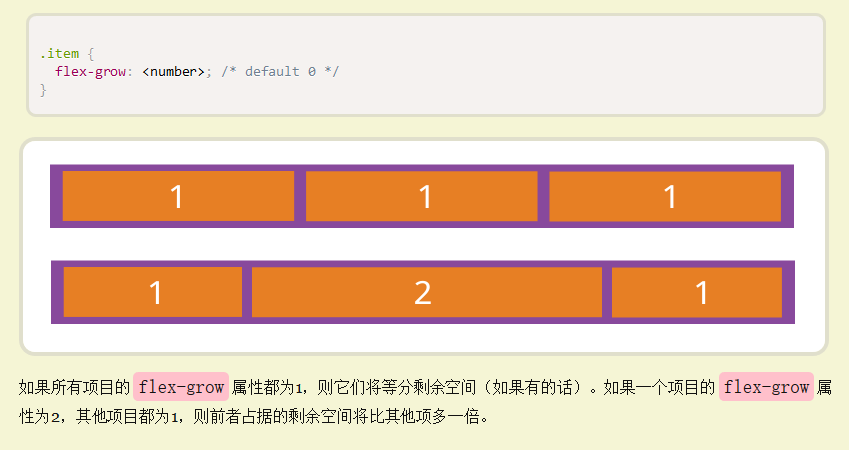</p>
<p>  <font size="4" face="黑体"><strong>3、flex-shrink属性：</strong></font><br>  flex-shrink属性定义了项目的缩小比例，默认为1，即如果空间不足，该项目将缩小。</p>
<p>  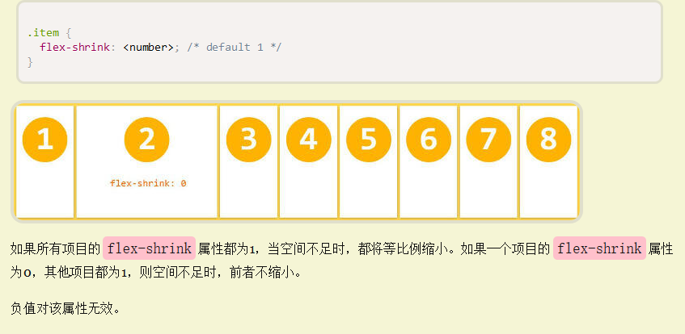</p>
<p>  <font size="4" face="黑体"><strong>4、flex-basis属性：</strong></font><br>  flex-basis属性定义了在分配多余空间之前，项目占据的主轴空间（main size）。浏览器根据这个属性，计算主轴是否有多余空间。它的默认值为auto，即项目的本来大小。</p>
<p>  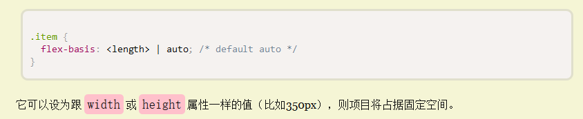</p>
<p>  <font size="4" face="黑体"><strong>5、flex属性：</strong></font><br>  flex属性是flex-grow, flex-shrink 和 flex-basis的简写，默认值为0 1 auto。后两个属性可选。</p>
<p>  你可以认为 flex 属性就是定义了每个孩子分隔父容器宽度的比例。<br>  比如容器 200px，三个孩子设置了 flex 分别是 1-2-1，那么他们实际上宽度是 50px 100px 50px。</p>
<p>  强烈建议用这个属性，而不是分别设定三个属性，因为这个属性可以“聪明地”设定三个属性来达到你要的效果，会自动计算 flex-basis 属性的值，如果人工算太麻烦（看下）：<br>  <figure class="highlight bash"><table><tr><td class="gutter"><pre><span class="line">1</span><br><span class="line">2</span><br><span class="line">3</span><br><span class="line">4</span><br><span class="line">5</span><br><span class="line">6</span><br><span class="line">7</span><br><span class="line">8</span><br><span class="line">9</span><br><span class="line">10</span><br><span class="line">11</span><br><span class="line">12</span><br><span class="line">13</span><br><span class="line">14</span><br><span class="line">15</span><br><span class="line">16</span><br><span class="line">17</span><br><span class="line">18</span><br><span class="line">19</span><br><span class="line">20</span><br><span class="line">21</span><br><span class="line">22</span><br></pre></td><td class="code"><pre><span class="line">比如容器宽度为 200px，然后你给三个孩子分别设置了</span><br><span class="line">.item1 &#123; flex: 1;&#125;</span><br><span class="line">.item2 &#123; flex: 2;&#125;</span><br><span class="line">.item3 &#123; flex: 1;&#125;</span><br><span class="line">那么他们的宽度将是 50-100-50</span><br><span class="line"></span><br><span class="line">如果你想单独设置每一个孩子的三个属性，你会发现竟然无法按照 1-2-1 的比例平分了。</span><br><span class="line">因为flexbox的计算每个孩子的宽度分两部分：</span><br><span class="line">1，计算出孩子本身的宽度</span><br><span class="line">2，将剩余的空白按比例平分给每一个孩子。</span><br><span class="line">所以你如果这样定义：</span><br><span class="line">.item1 &#123; flex-grow: 1;flex-shrink:1;&#125;</span><br><span class="line">.item2 &#123; flex-grow: 2;flex-shrink:2;&#125;</span><br><span class="line">.item3 &#123; flex-grow: 1;flex-shrink:1;&#125;</span><br><span class="line">你会发现孩子不是 50-100-50 的宽度，因为他们是按照 1-2-1 平分了剩余的空白。</span><br><span class="line">假设每个孩子本身是 20px 宽度，那么这么定义之后，他们其实按 1-2-1 平分了 140px 的空白。加上自身宽度之后比例 显然不是 1-2-1。</span><br><span class="line">所以你还需要把它们的flex-basis也设置成 1-2-2，这么写才行：</span><br><span class="line">.item1 &#123; flex-grow: 1;flex-shrink:1;flex-basis: 20px;&#125;</span><br><span class="line">.item2 &#123; flex-grow: 2;flex-shrink:2;flex-basis: 40px;&#125;</span><br><span class="line">.item3 &#123; flex-grow: 1;flex-shrink:1;flex-basis: 20px;&#125;</span><br><span class="line"></span><br><span class="line">而这样就很麻烦，不如直接用 flex 属性来定义。而事实上，你可以认为 flex 属性就是帮你做了上面的计算。</span><br></pre></td></tr></table></figure></p>
<p>  <font size="4" face="黑体"><strong>6、align-self属性：</strong></font><br>  align-self属性允许单个项目有与其他项目不一样的对齐方式，可覆盖align-items属性。默认值为auto，表示继承父元素的align-items属性，如果没有父元素，则等同于stretch。</p>
<p>  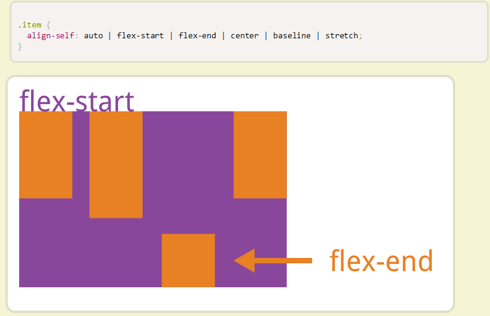</p>
<h3 id="六、实例之骰子的布局"><a href="#六、实例之骰子的布局" class="headerlink" title="六、实例之骰子的布局"></a>六、实例之骰子的布局</h3><p>  骰子的一面，最多可以放置9个点:</p>
<p>  </p>
<p>  如果不加说明，本节的HTML模板一律如下：<br>  <figure class="highlight bash"><table><tr><td class="gutter"><pre><span class="line">1</span><br><span class="line">2</span><br><span class="line">3</span><br><span class="line">4</span><br><span class="line">5</span><br><span class="line">6</span><br><span class="line">7</span><br></pre></td><td class="code"><pre><span class="line">&lt;div class=<span class="string">"box"</span>&gt;</span><br><span class="line">    &lt;span class=<span class="string">"item"</span>&gt;&lt;/span&gt;</span><br><span class="line">&lt;/div&gt;</span><br><span class="line"></span><br><span class="line">上面代码中，</span><br><span class="line">div元素（代表骰子的一个面）是Flex容器，</span><br><span class="line">span元素（代表一个点）是Flex项目,如果有多个项目，就要添加多个span元素，以此类推。</span><br></pre></td></tr></table></figure></p>
<p>  1、单项目：</p>
<p>  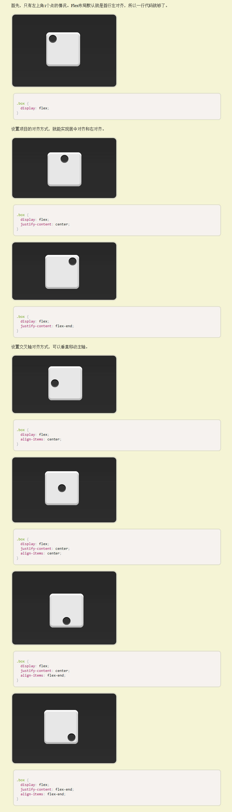</p>
<p>  2、双项目：</p>
<p>  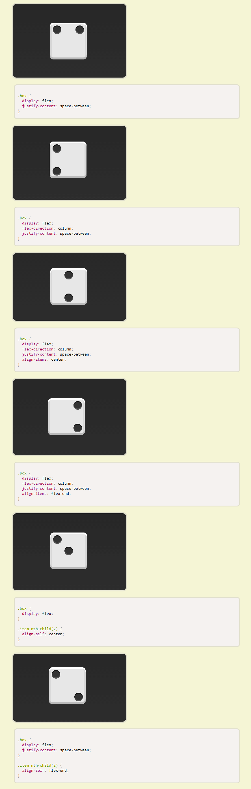</p>
<p>  3、三项目：</p>
<p>  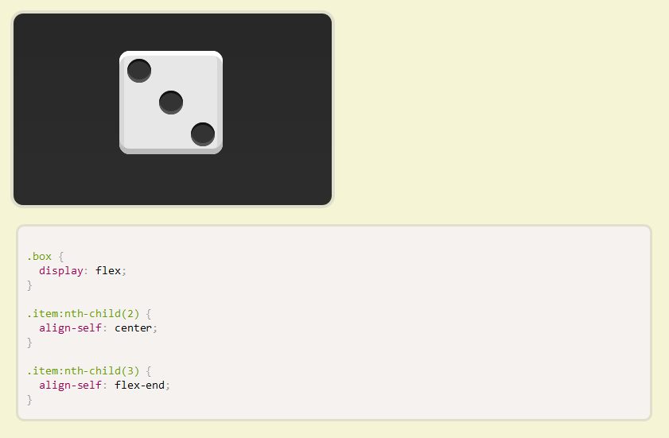</p>
<p>  4、四项目：</p>
<p>  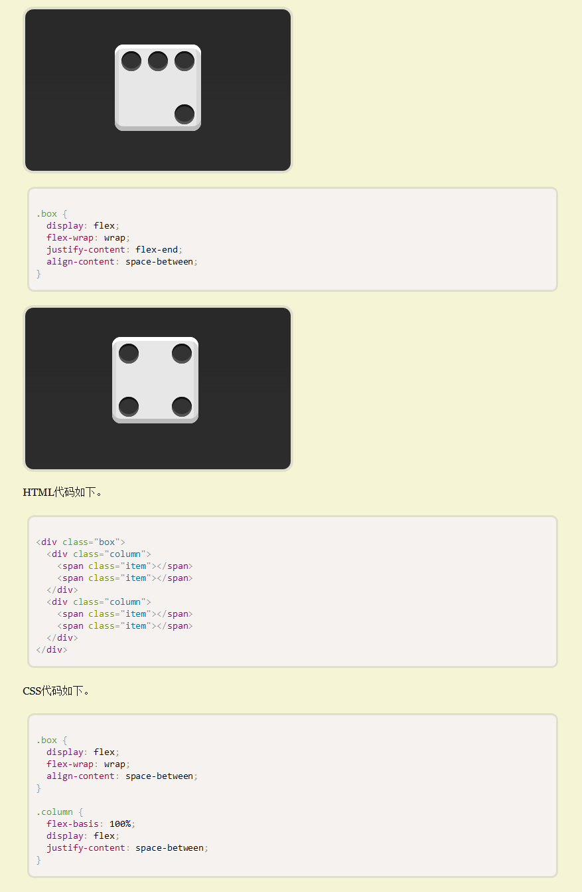</p>
<p>  5、六项目：</p>
<p>  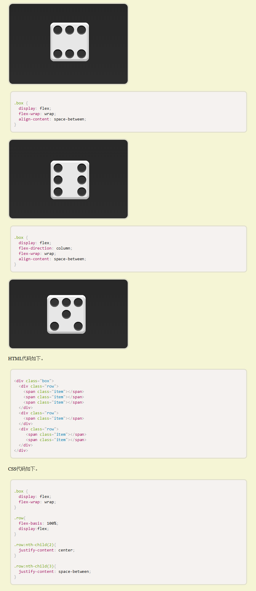</p>
<p>  6、九项目：</p>
<p>  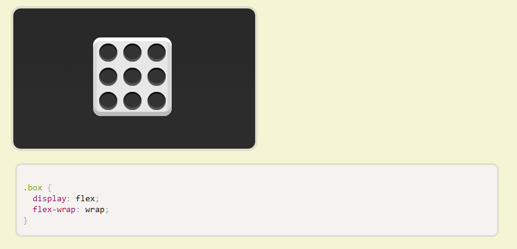</p>
<h3 id="七、实例之网格布局"><a href="#七、实例之网格布局" class="headerlink" title="七、实例之网格布局"></a>七、实例之网格布局</h3><p>  1、基本网格布局<br>  最简单的网格布局，就是平均分布。在容器里面平均分配空间，需要设置项目的自动缩放。</p>
<p>  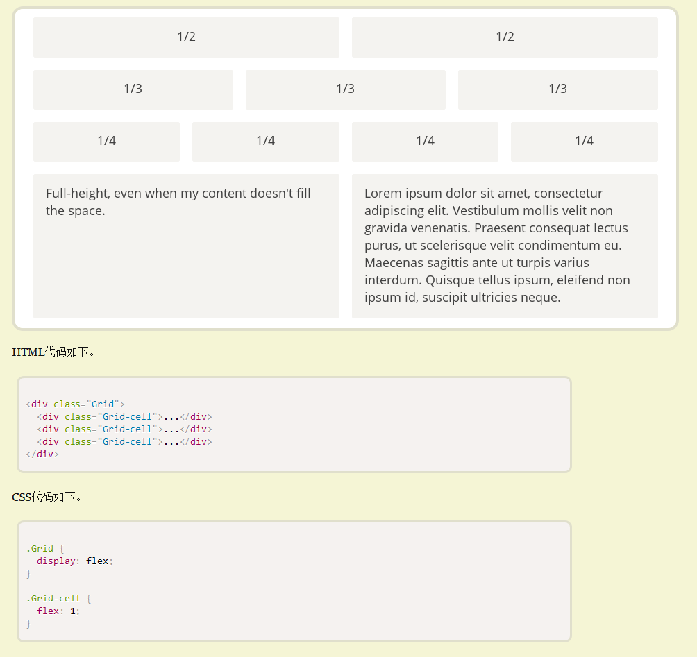</p>
<p>  2、百分比布局<br>  某个网格的宽度为固定的百分比，其余网格平均分配剩余的空间。</p>
<p>  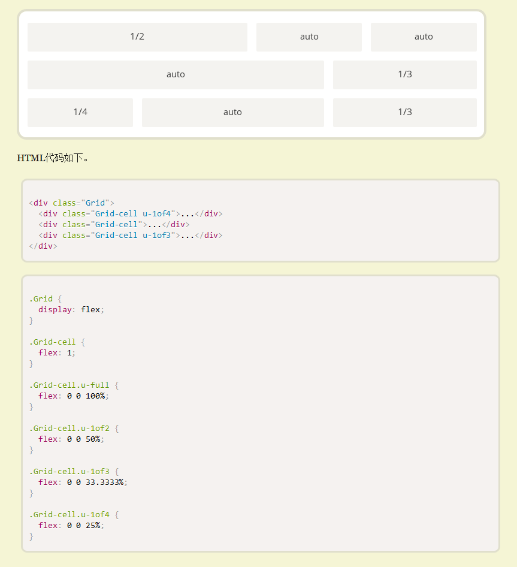</p>
<h3 id="八、实例之圣杯布局"><a href="#八、实例之圣杯布局" class="headerlink" title="八、实例之圣杯布局"></a>八、实例之圣杯布局</h3><p>  圣杯布局（Holy Grail Layout）是一种常见的网站布局。页面从上到下，分成三个部分：头部（header），躯干（body），尾部（footer）。其中躯干又水平分成三栏，从左到右为：导航、主栏、副栏。</p>
<p>  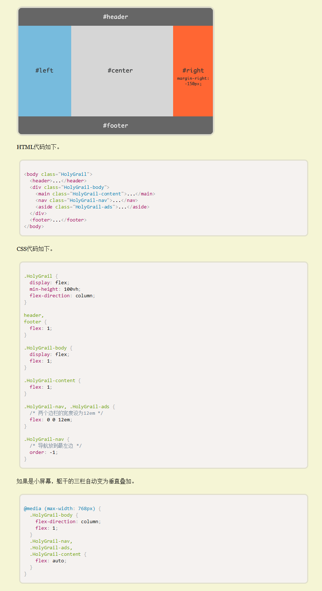</p>
<h3 id="九、实例之输入框的布局"><a href="#九、实例之输入框的布局" class="headerlink" title="九、实例之输入框的布局"></a>九、实例之输入框的布局</h3><p>  我们常需要在输入框的前方添加提示，后方添加按钮。</p>
<p>  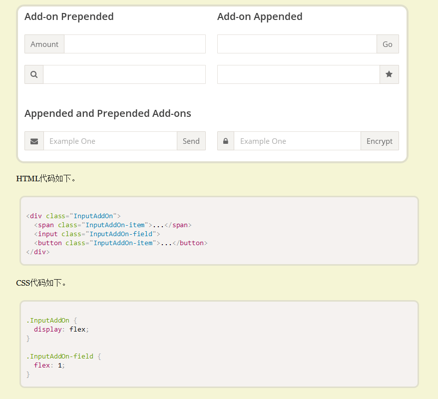</p>
<h3 id="十、实例之悬挂式布局"><a href="#十、实例之悬挂式布局" class="headerlink" title="十、实例之悬挂式布局"></a>十、实例之悬挂式布局</h3><p>  有时，主栏的左侧或右侧，需要添加一个图片栏。</p>
<p>  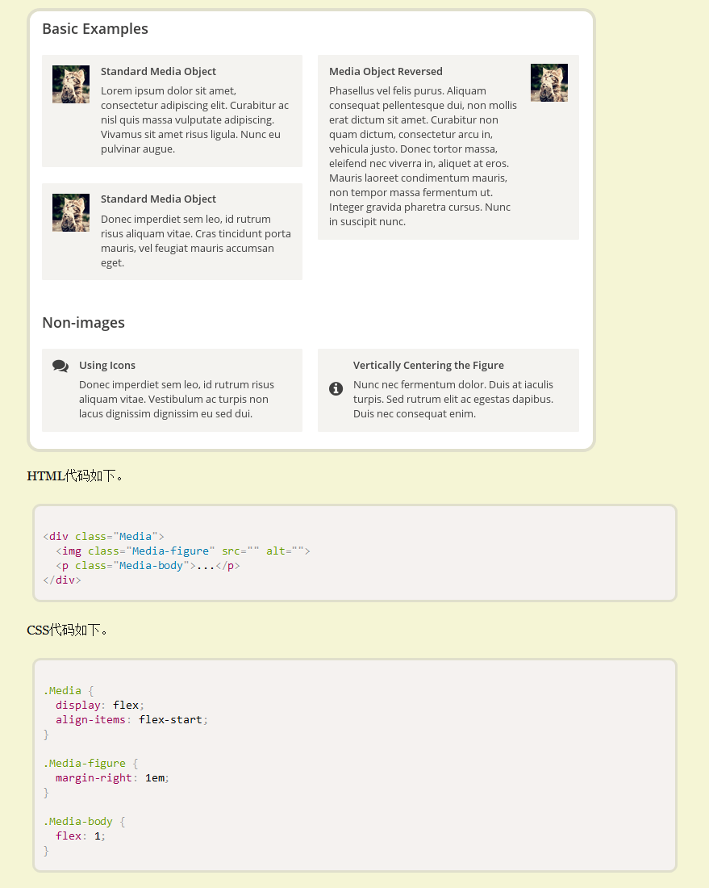</p>
<h3 id="十一、实例之固定的底栏"><a href="#十一、实例之固定的底栏" class="headerlink" title="十一、实例之固定的底栏"></a>十一、实例之固定的底栏</h3><p>  有时，页面内容太少，无法占满一屏的高度，底栏就会抬高到页面的中间。这时可以采用Flex布局，让底栏总是出现在页面的底部。</p>
<p>  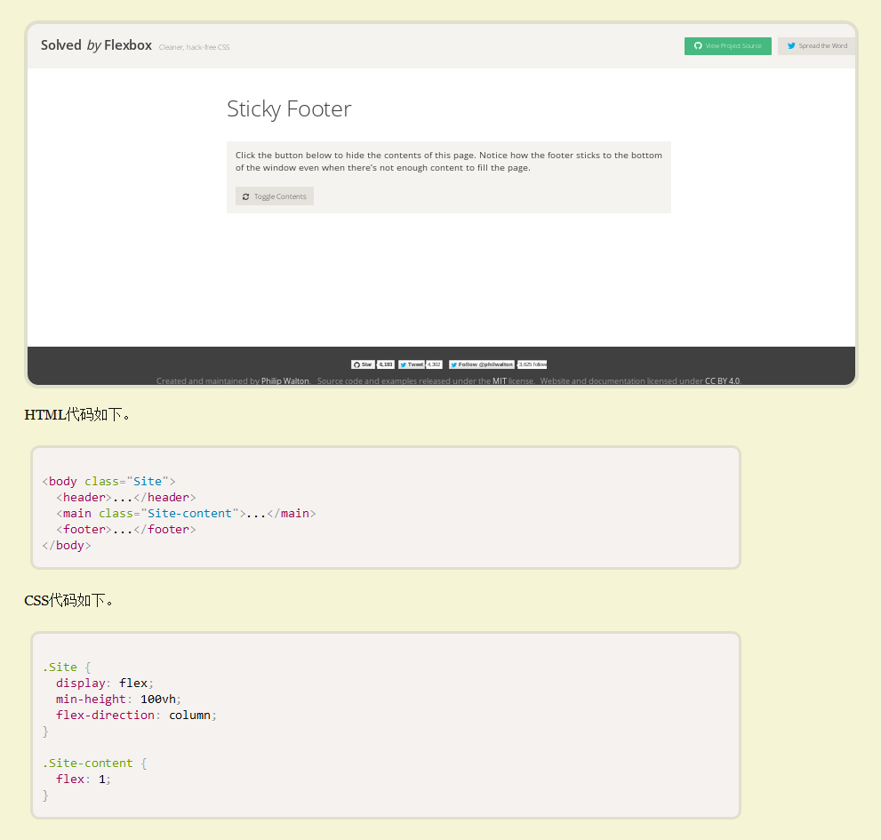</p>
<h3 id="十二、实例之流式布局"><a href="#十二、实例之流式布局" class="headerlink" title="十二、实例之流式布局"></a>十二、实例之流式布局</h3><p>  每行的项目数固定，会自动分行。</p>
<p>  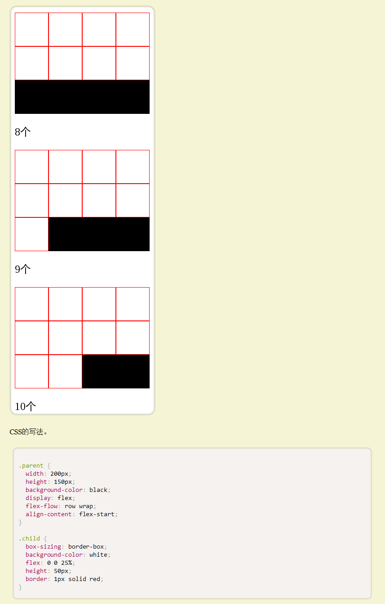</p>
<p>标注：</p>
<ul>
<li>参考资料：<a href="http://www.ruanyifeng.com/blog/2015/07/flex-examples.html" target="_blank" rel="noopener">http://www.ruanyifeng.com/blog/2015/07/flex-examples.html</a></li>
</ul>

            <div class="post-copyright">
    <div class="content">
        <p>最后更新： 2019年01月25日 17:59</p>
        <p>原始链接： <a class="post-url" href="/2018/03/12/CSS-ryf-flex/" title="flex布局">http://liuxuewen-site.github.io/2018/03/12/CSS-ryf-flex/</a></p>
        <footer>
            <a href="http://liuxuewen-site.github.io">
                
                liuxuewen
            </a>
        </footer>
    </div>
</div>

      
        
            
<div class="page-reward">
    <a id="rewardBtn" href="javascript:;">赏</a>
</div>

<div id="reward" class="post-modal reward-lay">
    <a class="close" href="javascript:;" id="reward-close">×</a>
    <span class="reward-title">
        <i class="icon icon-quote-left"></i>
        请我吃糖~
        <i class="icon icon-quote-right"></i>
    </span>
    <div class="reward-content">
        
        <div class="reward-code">
            
        </div>
        <div class="reward-select">
            
            <label class="reward-select-item checked" data-id="wechat" data-wechat="/images/wechat_code.jpg">
                
            </label>
            
            
            <label class="reward-select-item" data-id="alipay" data-alipay="/images/alipay_code.jpg">
                
            </label>
            
        </div>
    </div>
</div>


        
    </div>
    <footer class="article-footer">
        
        
<div class="post-share">
    <a href="javascript:;" id="share-sub" class="post-share-fab">
        <i class="fa fa-share-alt"></i>
    </a>
    <div class="post-share-list" id="share-list">
        <ul class="share-icons">
          <li>
            <a class="weibo share-sns" target="_blank" href="http://service.weibo.com/share/share.php?url=http://liuxuewen-site.github.io/2018/03/12/CSS-ryf-flex/&title=《flex布局》 — LIUXUEWEN'S BLOG&pic=http://liuxuewen-site.github.ioimages/logo.png" data-title="微博">
              <i class="fa fa-weibo"></i>
            </a>
          </li>
          <li>
            <a class="weixin share-sns" id="wxFab" href="javascript:;" data-title="微信">
              <i class="fa fa-weixin"></i>
            </a>
          </li>
          <li>
            <a class="qq share-sns" target="_blank" href="http://connect.qq.com/widget/shareqq/index.html?url=http://liuxuewen-site.github.io/2018/03/12/CSS-ryf-flex/&title=《flex布局》 — LIUXUEWEN'S BLOG&source=" data-title="QQ">
              <i class="fa fa-qq"></i>
            </a>
          </li>
          <li>
            <a class="facebook share-sns" target="_blank" href="https://www.facebook.com/sharer/sharer.php?u=http://liuxuewen-site.github.io/2018/03/12/CSS-ryf-flex/" data-title="Facebook">
              <i class="fa fa-facebook"></i>
            </a>
          </li>
          <li>
            <a class="twitter share-sns" target="_blank" href="https://twitter.com/intent/tweet?text=《flex布局》 — LIUXUEWEN'S BLOG&url=http://liuxuewen-site.github.io/2018/03/12/CSS-ryf-flex/&via=http://liuxuewen-site.github.io" data-title="Twitter">
              <i class="fa fa-twitter"></i>
            </a>
          </li>
          <li>
            <a class="google share-sns" target="_blank" href="https://plus.google.com/share?url=http://liuxuewen-site.github.io/2018/03/12/CSS-ryf-flex/" data-title="Google+">
              <i class="fa fa-google-plus"></i>
            </a>
          </li>
        </ul>
     </div>
</div>
<div class="post-modal wx-share" id="wxShare">
    <a class="close" href="javascript:;" id="wxShare-close">×</a>
    <p>扫一扫，分享到微信</p>
    
</div>

<div class="mask"></div>

        
        <ul class="article-footer-menu">
            
            
  <li class="article-footer-tags">
    <i class="fa fa-tags"></i>
      
    <a href="/tags/前端-CSS/" class="color2">前端-CSS</a>
      
  </li>

        </ul>
        
    </footer>
  </div>
</article>


    <aside class="post-toc-pos post-toc-top" id="post-toc">
        <nav class="post-toc-wrap">
            <ol class="post-toc"><li class="post-toc-item post-toc-level-3"><a class="post-toc-link" href="#一、前言"><span class="post-toc-text">一、前言</span></a></li><li class="post-toc-item post-toc-level-3"><a class="post-toc-link" href="#二、Flex-布局"><span class="post-toc-text">二、Flex 布局</span></a></li><li class="post-toc-item post-toc-level-3"><a class="post-toc-link" href="#三、基本原理"><span class="post-toc-text">三、基本原理</span></a></li><li class="post-toc-item post-toc-level-3"><a class="post-toc-link" href="#四、容器的属性"><span class="post-toc-text">四、容器的属性</span></a></li><li class="post-toc-item post-toc-level-3"><a class="post-toc-link" href="#五、项目的属性"><span class="post-toc-text">五、项目的属性</span></a></li><li class="post-toc-item post-toc-level-3"><a class="post-toc-link" href="#六、实例之骰子的布局"><span class="post-toc-text">六、实例之骰子的布局</span></a></li><li class="post-toc-item post-toc-level-3"><a class="post-toc-link" href="#七、实例之网格布局"><span class="post-toc-text">七、实例之网格布局</span></a></li><li class="post-toc-item post-toc-level-3"><a class="post-toc-link" href="#八、实例之圣杯布局"><span class="post-toc-text">八、实例之圣杯布局</span></a></li><li class="post-toc-item post-toc-level-3"><a class="post-toc-link" href="#九、实例之输入框的布局"><span class="post-toc-text">九、实例之输入框的布局</span></a></li><li class="post-toc-item post-toc-level-3"><a class="post-toc-link" href="#十、实例之悬挂式布局"><span class="post-toc-text">十、实例之悬挂式布局</span></a></li><li class="post-toc-item post-toc-level-3"><a class="post-toc-link" href="#十一、实例之固定的底栏"><span class="post-toc-text">十一、实例之固定的底栏</span></a></li><li class="post-toc-item post-toc-level-3"><a class="post-toc-link" href="#十二、实例之流式布局"><span class="post-toc-text">十二、实例之流式布局</span></a></li></ol>
        </nav>
    </aside>
    

<nav id="article-nav">
  
    <a href="/2018/03/14/JS-bs-pseudoArray/" id="article-nav-newer" class="article-nav-link-wrap">

      <span class="article-nav-title">
        <i class="fa fa-hand-o-left" aria-hidden="true"></i>
        
          伪数组
        
      </span>
    </a>
  
  
    <a href="/2018/03/12/network-bs-cache/" id="article-nav-older" class="article-nav-link-wrap">
      <span class="article-nav-title">浏览器缓存机制</span>
      <i class="fa fa-hand-o-right" aria-hidden="true"></i>
    </a>
  
</nav>


    
</section>
        
      </div>
      <footer id="footer">
  <div class="outer">
    <div id="footer-info" class="inner">
      
<p>
    <span id="busuanzi_container_site_uv" style="display:none">
        总访客数：<span id="busuanzi_value_site_uv"></span>
    </span>
    <span id="busuanzi_container_site_pv" style="display:none">
        总访问量：<span id="busuanzi_value_site_pv"></span>
    </span>
</p>


      <!-- <p>
        Powered by  <a href="http://hexo.io/" target="_blank">Hexo</a>
        Theme <a href="//github.com/wongminho/hexo-theme-miho" target="_blank">MiHo</a>
      &copy; 2019 liuxuewen<br>
      </p> -->
      <p>
        1320325272@qq.com 
        liuxuewen
      </p>
    </div>
  </div>
</footer>
    <script async src="//busuanzi.ibruce.info/busuanzi/2.3/busuanzi.pure.mini.js"></script>
<script src="//cdn.bootcss.com/jquery/3.2.1/jquery.min.js"></script>
<script>
  var mihoConfig = {
      root: "http://liuxuewen-site.github.io",
      animate: true,
      isHome: false,
      share: true,
      reward: 1
  }
</script>
<div class="sidebar">
    <div id="sidebar-search" title="Search">
        <i class="fa fa-search"></i>
    </div>
    <div id="sidebar-category" title="Categories">
        <i class="fa fa-book"></i>
    </div>
    <div id="sidebar-tag" title="Tags">
        <i class="fa fa-tags"></i>
    </div>
    <div id="sidebar-top">
        <span class="sidebar-top-icon"><i class="fa fa-angle-up"></i></span>
    </div>
</div>
<div class="sidebar-menu-box" id="sidebar-menu-box">
    <div class="sidebar-menu-box-container">
        <div id="sidebar-menu-box-categories">
            <a class="category-link" href="/categories/hexo/">hexo</a><a class="category-link" href="/categories/前端/">前端</a><a class="category-link" href="/categories/后台/">后台</a><a class="category-link" href="/categories/数据结构/">数据结构</a><a class="category-link" href="/categories/网络协议/">网络协议</a><a class="category-link" href="/categories/项目/">项目</a>
        </div>
        <div id="sidebar-menu-box-tags">
            <a href="/tags/hexo/" style="font-size: 12.86px;">hexo</a> <a href="/tags/前端-CSS/" style="font-size: 14.29px;">前端-CSS</a> <a href="/tags/前端-ES6/" style="font-size: 11.43px;">前端-ES6</a> <a href="/tags/前端-HTML5/" style="font-size: 10px;">前端-HTML5</a> <a href="/tags/前端-JS/" style="font-size: 18.57px;">前端-JS</a> <a href="/tags/前端-react/" style="font-size: 20px;">前端-react</a> <a href="/tags/前端-安全性/" style="font-size: 10px;">前端-安全性</a> <a href="/tags/前端-性能优化/" style="font-size: 10px;">前端-性能优化</a> <a href="/tags/前端-服务器/" style="font-size: 11.43px;">前端-服务器</a> <a href="/tags/前端-移动端适配/" style="font-size: 11.43px;">前端-移动端适配</a> <a href="/tags/前端-考题/" style="font-size: 17.14px;">前端-考题</a> <a href="/tags/后台/" style="font-size: 10px;">后台</a> <a href="/tags/数据结构/" style="font-size: 10px;">数据结构</a> <a href="/tags/网络协议/" style="font-size: 15.71px;">网络协议</a> <a href="/tags/项目/" style="font-size: 10px;">项目</a>
        </div>
    </div>
    <a href="javascript:;" class="sidebar-menu-box-close">&times;</a>
</div>
<div class="mobile-header-menu-nav" id="mobile-header-menu-nav">
    <div class="mobile-header-menu-container">
        <span class="title">Menus</span>
        <ul class="mobile-header-menu-navbar">
            
            <li>
                <a href="/">
                    <i class="fa fa-home"></i><span>Home</span>
                </a>
            </li>
            
            <li>
                <a href="/archives">
                    <i class="fa fa-archive"></i><span>Archives</span>
                </a>
            </li>
            
            <li>
                <a href="/about">
                    <i class="fa fa-user"></i><span>About</span>
                </a>
            </li>
            
        </ul>
    </div>
    <div class="mobile-header-tag-container">
        <span class="title">Tags</span>
        <div id="mobile-header-container-tags">
            <a href="/tags/hexo/" style="font-size: 12.86px;">hexo</a> <a href="/tags/前端-CSS/" style="font-size: 14.29px;">前端-CSS</a> <a href="/tags/前端-ES6/" style="font-size: 11.43px;">前端-ES6</a> <a href="/tags/前端-HTML5/" style="font-size: 10px;">前端-HTML5</a> <a href="/tags/前端-JS/" style="font-size: 18.57px;">前端-JS</a> <a href="/tags/前端-react/" style="font-size: 20px;">前端-react</a> <a href="/tags/前端-安全性/" style="font-size: 10px;">前端-安全性</a> <a href="/tags/前端-性能优化/" style="font-size: 10px;">前端-性能优化</a> <a href="/tags/前端-服务器/" style="font-size: 11.43px;">前端-服务器</a> <a href="/tags/前端-移动端适配/" style="font-size: 11.43px;">前端-移动端适配</a> <a href="/tags/前端-考题/" style="font-size: 17.14px;">前端-考题</a> <a href="/tags/后台/" style="font-size: 10px;">后台</a> <a href="/tags/数据结构/" style="font-size: 10px;">数据结构</a> <a href="/tags/网络协议/" style="font-size: 15.71px;">网络协议</a> <a href="/tags/项目/" style="font-size: 10px;">项目</a>
        </div>
    </div>
</div>
<div class="search-wrap">
    <span class="search-close">&times;</span>
        <a href="javascript:;" class="header-icon waves-effect waves-circle waves-light" id="back">
            <i class="icon icon-lg icon-chevron-left"></i>
        </a>
        <input class="search-field" placeholder="Search..." id="keywords">
        <a id="search-submit" href="javascript:;">
            <i class="fa fa-search"></i>
        </a>
    <div class="search-container" id="search-container">
        <ul class="search-result" id="search-result">
        </ul>
    </div>
</div>

<div id="search-tpl">
    <li class="search-result-item">
        <a href="{url}" class="search-item-li">
            <span class="search-item-li-title" title="{title}">{title}</span>
        </a>
    </li>
</div>
<script src="/js/search.js"></script>
<script src="/js/main.js"></script>


  <script src="//cdn.bootcss.com/particles.js/2.0.0/particles.min.js"></script>
  <div id="particles"></div>
  <script src="/js/particles.js"></script>


  <link rel="stylesheet" href="//cdn.bootcss.com/animate.css/3.5.0/animate.min.css">
  <script src="//cdn.bootcss.com/scrollReveal.js/3.0.5/scrollreveal.js"></script>
  <script src="/js/animate.js"></script>


  <script src="/js/pop-img.js"></script>
  <script>
     $(".article-entry p img").popImg();
  </script>

  </div>
</body>
</html>